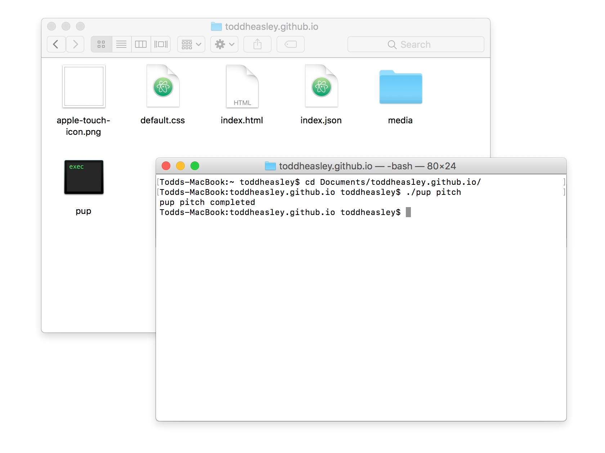

<!DOCTYPE html>
<title>Pup Tent - Todd Heasley</title>
<meta name="viewport" content="initial-scale=1.0">
<meta name="twitter:card" content="summary_large_image">
<meta name="twitter:site" content="@toddheasley">
<meta name="twitter:title" content="Pup Tent">
<meta name="twitter:description" content="Lightweight static site editor for the Mac">
<meta name="twitter:image" content="puptent.png">
<link rel="apple-touch-icon" href="toddheasley.png">
<link rel="stylesheet" href="toddheasley.css">
<header>
    <h1><a href="index.html">Todd&nbsp;Heasley</a></h1>
</header>
<main>
    <h1>Pup Tent</h1>
    <h2><time>2011 - 2016</time></h2>
    <figure><a href="puptent.png"></a></figure>
    <p>Lightweight static site editor for the Mac</p>
    <figure><a href="puptent-cli.png"></a></figure>
    <p><a href="https://github.com/toddheasley/puptent"></a></p>
</main>
<footer>
    <p><a href="https://twitter.com/toddheasley">@toddheasley</a></p>
</footer>